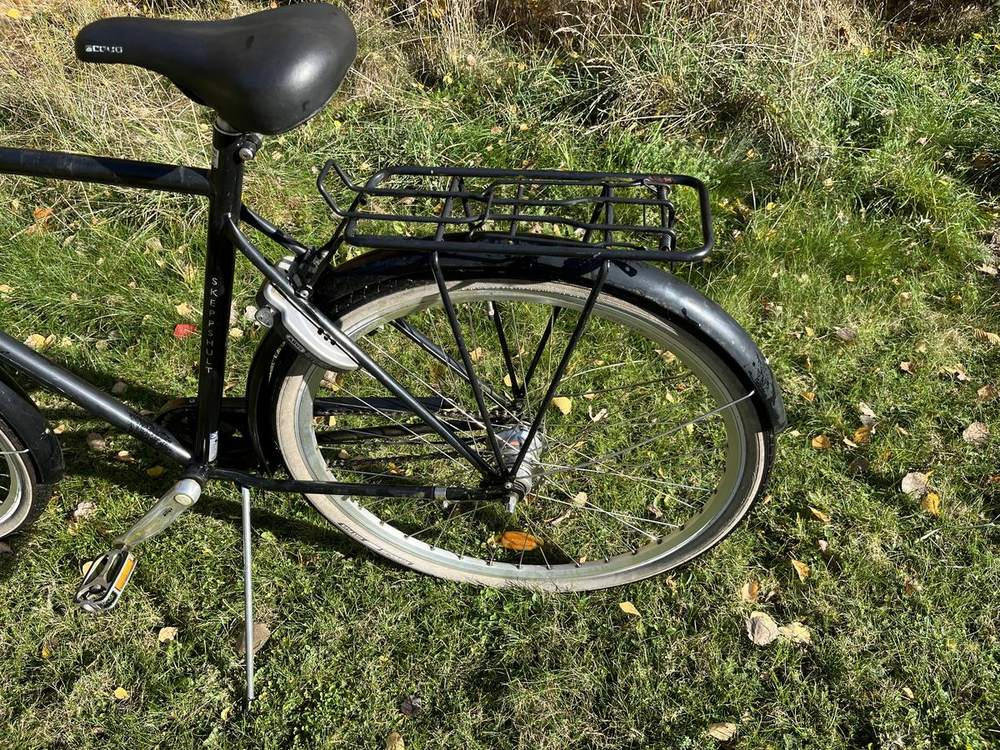
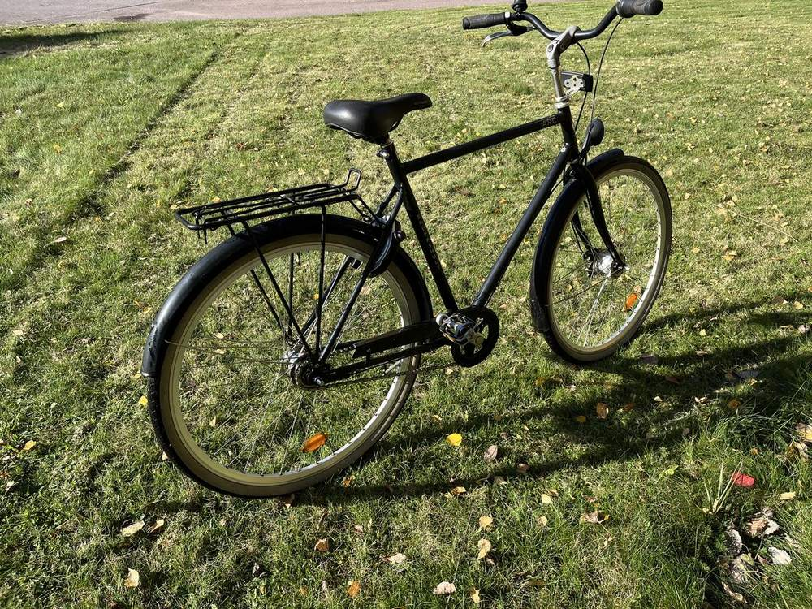
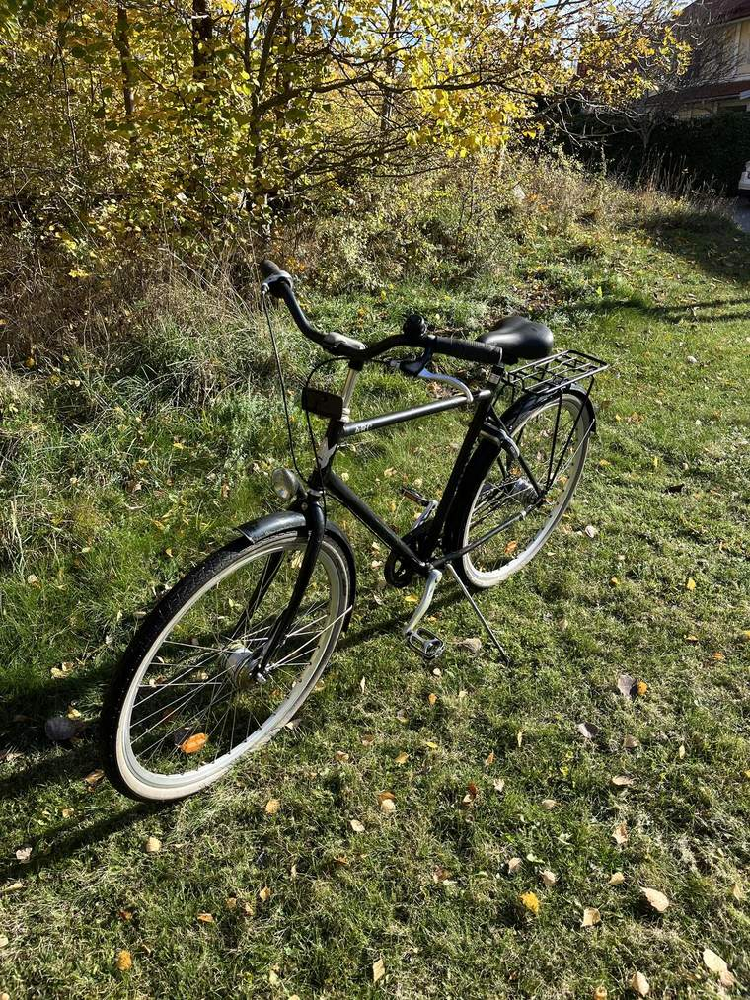
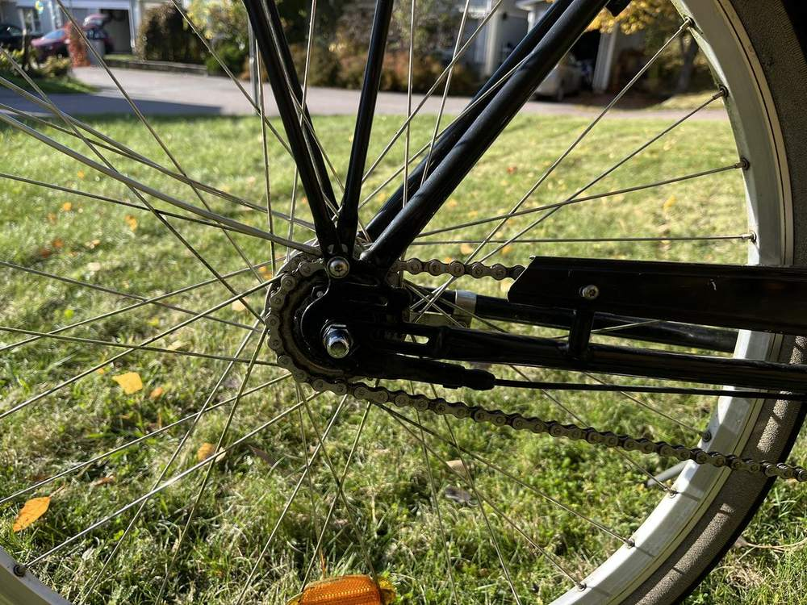
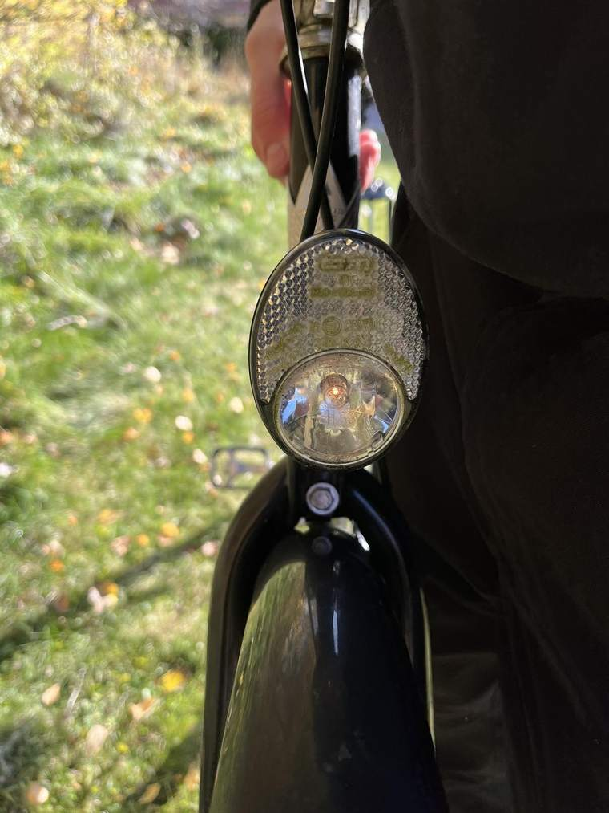

Skeppshult stadscykel
1 800 krFin Skeppshult stadscykel, ca 15 år gammal, som nyligen har servats. Shimano Nexus-nav med 7 växlar. Lampan och växlarna fungerar och i övrigt är cykeln i bra skick.
Vad som är gjort
Nyligen utfört
- Rengjord
- Kedjan spänd
- Kedjan rengjord och smord
- Alla viktiga skruvar och muttrar efterdragna
- Testad så att allt fungerar
- Däcken pumpade
Utrustning
- Shimano Nexus, 7 växlar
- Belysning